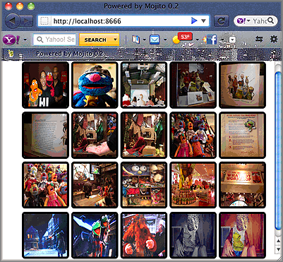

Calling YQL from a Mojit¶
Time Estimate: 15 minutes
Difficulty Level: Intermediate
Summary¶
This example shows how to use YQL to get Flickr images from a Mojito application. YQL allows you to get data from many sources in the form of JSON, JSONP, and XML. For more information about YQL, see the YQL Guide. For this example, you will need to get a Flickr API key.
The following topics will be covered:
- forming a YQL statement to get Flickr photo information
- creating a model for your mojit to get data
- getting query string parameters with the Params addon
- calling the YQL Web service with the YQL Module of YUI
Implementation Notes¶
The following screenshot shows the grid of Flickr images retrieved by YQL.
Forming the YQL Statement and Flickr Photo URI¶
The mojit model needs a method to access data. This code example uses YQL to access Flickr data, so we need to form the YQL statement to get the Flickr image information. Because the response from the YQL statement contains photo information and not the URIs to images, you also need to form the URI scheme for Flickr photos.
To get photo data from Flickr, you use the YQL table flickr.photos.search. This table allows you to get photos that are associated with a string. In the YQL statement below, we use the table to return Flickr photos whose title, description, or tags contain the text “muppet”. Click on the YQL statement to open the YQL Console, and then click the TEST button to see the returned XML response.
As you can see from the partial response from YQL below, the photo URIs are not returned, just metadata about the photos. You need to extract metadata and use it to form the photo URIs to get the photos. We’ll look at the URI scheme for the photos next.
<?xml version="1.0" encoding="UTF-8"?>
<query xmlns:yahoo="http://www.yahooapis.com/v1/base.rng" yahoo:count="10" yahoo:created="2011-04-11T18:06:11Z" yahoo:lang="en-US">
<results>
<photo farm="6" id="5610093730" isfamily="0" isfriend="0" ispublic="1" owner="39177028@N02" secret="9d63f1859f" server="5022" title="Bert - Brighton Marathon 2011"/>
<photo farm="6" id="5610093952" isfamily="0" isfriend="0" ispublic="1" owner="39177028@N02" secret="fded96fba7" server="5181" title="Bert - Brighton Marathon 2011"/>
...
</results>
</query>
Using the farm, server, id, secret, and title attributes from the response, you form the photo URIs using the following URI scheme:
http://farm + {farm} + static.flickr.com/ + {server} + / + {id} + _ + {secret} + .jpg
Having formed the YQL statement and the Flickr photo URI to get data, we can create the model.
Creating the Model¶
The mojit model for this code example does the following:
- creates the YQL statement
- calls the YQL Web service
- extracts the data from the returned response
- forms the photo URIs
- passes photo information to the controller
In the example model.server.js below, the search function creates the YQL statement and passes it to the YQL function made available by the YQL Module of YUI.
The YQL function makes the REST call to the YQL Web services, and the response is passed to an anonymous function. This function extracts the fields from the response that are needed to create the photo URIs and then stores those photo URIs, photo IDs, and titles in objects. These objects are stored in the photos array and passed to the controller through the callback function.
Note
If you are new to the Node.js world, when you create models for your applications, take these words to heart: DON’T WRITE BLOCKING CODE. Models need to be asynchronous in order to allow the rest of Mojito execution to continue, so you cannot call any model functions synchronously. You must call them with a callback function to be executed when the model receives its data. Because you don’t know when the model is getting its data, you have to assume that it may block.
Calling the Model from the Controller¶
The controller in this code example performs the following functions:
- gets the query string parameters using the Params addon
- passes the query string parameters to the search function of the model
- receives the photos array from the search function and sends an object to the view template
The index function in the controller.server.js below uses the getFromUrl method of the Params addon to get the query string parameters to form the YQL statement. The YQL Statement and the paging and limit parameters are then passed to the search function of the model.
To access model functions from the controller, you use the Action Context (ac) object with the following syntax: ac.models.{model_name}. This code example uses the flickr mojit, so to access the model from the controller, you would use ac.models.flickr as seen in the model.server.js below. Once the callback function passed to search returns the array of photo objects, the done method sends the photos array and the query string parameters to the index view template.
YUI.add('flickr', function(Y,NAME) {
Y.mojito.controllers[NAME] = {
init: function(config) {
this.config = config;
},
index: function(ac) {
var q = ac.params.getFromUrl('q') || 'muppet',
page = (ac.params.getFromUrl('page') || 0) / 1,
count = (ac.params.getFromUrl('size') || 20) / 1,
start = page * count;
var model = ac.models.flickr;
model.search (q, start, count, function(photos) {
ac.done (
{
photos: photos,
page: page,
count: count,
start: start
});
});
}
};
}, '0.0.1', {requires: []});
Setting Up this Example¶
To set up and run model_yql:
Create your application.
$ mojito create app model_yql
Change to the application directory.
Create your mojit.
$ mojito create mojit flickr
To specify that your application uses HTMLFrameMojit and the child flickr mojit, replace the code in application.json with the following:
[ { "settings": [ "master" ], "specs": { "frame": { "type": "HTMLFrameMojit", "config": { "deploy": true, "child": { "type": "flickr" }, "assets": { "top": { "css": [ "/static/flickr/assets/index.css" ] } } } } } } ]
To configure the routing to call the index method an instance of HTMLFrameMojit, create the file routes.json with the following:
[ { "settings": [ "master" ], "_index": { "verbs": ["get"], "path": "/", "call": "frame.index" } } ]
Change to mojits/flickr.
Modify the mojit model to call YQL to get Flickr photos by replacing the code in models/model.server.js with the following:
YUI.add('flickrModel', function(Y,NAME) { // Replace '{Flickr API Key}' with your own Flickr // API key. var API_KEY = '{Flickr API Key}'; Y.mojito.models.flickr = { init: function(config) { this.config = config; }, getData: function(callback) { callback({some:'data'}); }, // Search for Flickr Images search: function (search, start, count, callback) { // Handle empty. if (null == search || 0 == search.length) { callback([]); } // Build YQL select. start /= 1; count /= 1; var select = 'select * from '+ 'flickr.photos.search ' + '(' + (start || 0) + ',' + (count || 20) + ') ' + 'where '+ 'text="%' + (search || 'muppet') + '%" and api_key="' + API_KEY + '"'; // Execute against YQL Y.YQL (select, function(rawYql) { // Handle empty response. if (null == rawYql || 0 == rawYql.query.count) { callback ([]); } // Process data. var photos = [], item = null; // Force array. if ( !rawYql.query.results.photo.length ) { rawYql.query.results.photo = [ rawYql.query.results.photo ]; } // Assume array for (var i=0; i < rawYql.query.count; i++) { // Fix up the item. item = rawYql.query.results.photo[i]; item.url = 'http://farm' + item.farm + '.static.flickr.com/' + item.server + '/' + item.id + '_' + item.secret + '.jpg'; item.title = (!item.title) ? search + ':' + i : item.title; // Attach the result. photos.push ( { id: item.id, title: item.title, url: item.url } ); } callback (photos); }); } }; }, '0.0.1', {requires: ['yql']});
Get a Flickr API key and then replace the string '{Flickr API Key}' in your model with your API key.
YUI.add('flickrModel', function(Y,NAME) { // Replace '{Flickr API Key}' with your own Flickr // API key. var API_KEY = '{Flickr API Key}'; ... }
Modify the mojit controller to get data from the model by replacing the code in controller.server.js with the following:
Create the file assets/index.css for the application’s CSS with the following:
body { margin:0; padding:0; } .tile li { display:inline; border-style: none; margin:0; padding:0; } .tile img { height:80px; width:80px; } .tile a img { border:4px solid; -webkit-border-radius:6px; -moz-border-radius:6px; border-radius:6px; border-color:#000; }
Modify your index view template by replacing the code in views/index.mu.html with the following:
<div id="{{mojit_view_id}}" class="mojit"> <ul class="tile"> {{#photos}} <li><a href="{{url}}"><img src="{{url}}" alt="{{title}}"></a></li> {{/photos}} </ul> </div>
From the application directory, run the server.
$ mojito start
To view your application, go to the URL below:
Get 50 Flickr photos using the search query “mojito” with the following URL: